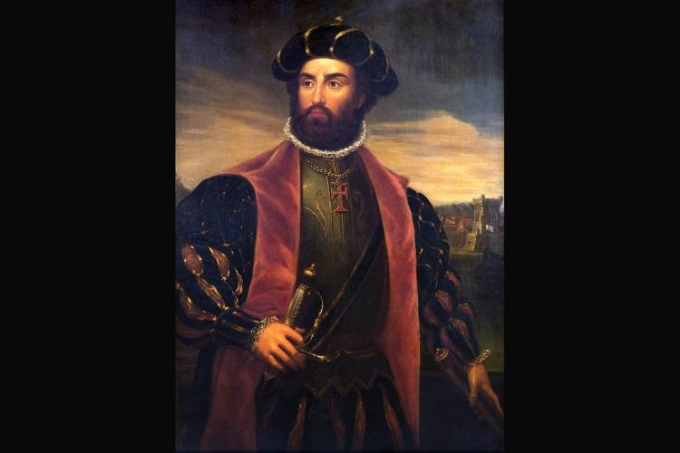
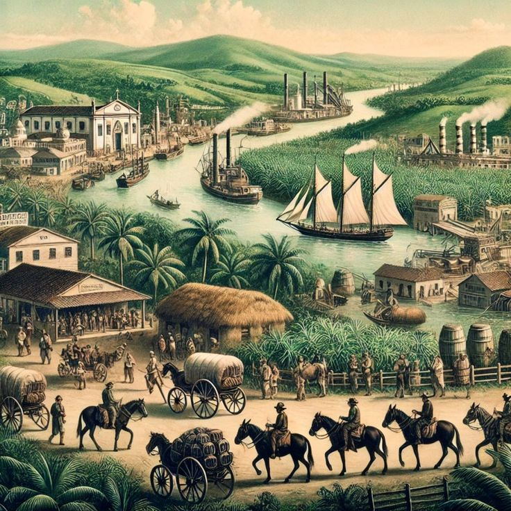
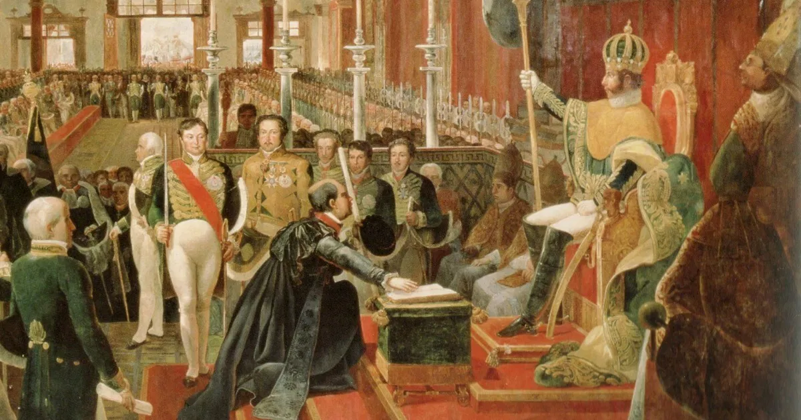
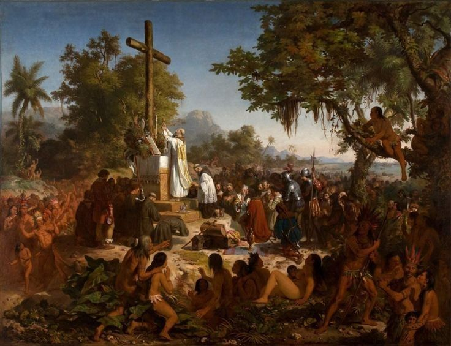
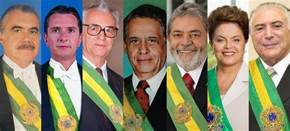
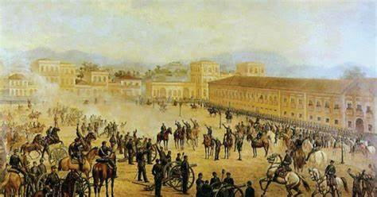

Principais personagens da história do Brasil
- Período Colonial (1500 a 1822) 🌴🤝📜
- Pedro Álvares Cabral – navegador português que chegou ao Brasil, comandando uma esquadra, em 1500.
- Pero Vaz de Caminha - escrivão da esquadra que chegou ao Brasil em 1500. É dele uma detalhada carta ao rei português, que fala sobre os índios, as belezas naturais e os primeiros contatos entre portugueses e indígenas.
- Martim Afonso de Souza – liderou a primeira expedição colonizadora ao Brasil em 1532.
- Tomé de Souza – primeiro governador-geral do Brasil.
- Mem de Sá - terceiro governador-geral, consolidou o poder colonial português e combateu os franceses no Rio de Janeiro.
- Duarte Coelho - donatário da Capitania de Pernambuco, contribuiu para o desenvolvimento econômico e cultural da região.
- Antônio Vieira - jesuíta e orador influente, defendeu os direitos dos indígenas e criticou a exploração colonial.
- Felipe Camarão - indígena que lutou ao lado dos portugueses contra os holandeses na Insurreição Pernambucana.
- Padres Manoel da Nóbrega e José de Anchieta – chegaram ao Brasil no século XVI, dando início a catequização dos índios.
- Maurício de Nassau - governador holandês que administrou Pernambuco no século XVII, no contexto das invasões holandesas no nordeste brasileiro.
- Zumbi dos Palmares – escravizado foragido, Zumbi foi líder do Quilombo de Palmares no final do século XVII. Passou para a história como um dos símbolos da resistência negra à escravidão.
- Tiradentes – líder da Inconfidência Mineira no século XVIII. É considerado um dos símbolos da luta brasileira contra a colonização portuguesa e pela independência do Brasil.
- Aleijadinho – um dos grandes artistas do Brasil Colonial. É considerado o mais importante escultor do período artístico conhecido como barroco mineiro.
- D. João VI – o rei de Portugal chegou com a corte portuguesa ao Brasil em 1808, dando início a várias ações modernizadoras no Rio de Janeiro.
 
- Período Imperial (1822 a 1889)👑✒️📷
- D. Pedro I – líder do processo de Independência do Brasil em 7 de setembro de 1822, tornou-se o primeiro imperador brasileiro. Seu reinado durou de 1822 a 1831.
- José Bonifácio – passou para a História como sendo o “patrono da independência”, pois teve grande papel no processo de Independência do Brasil.
- D. Pedro II – segundo imperador brasileiro, cujo reinado durou de 1831 a 1889.
- Maria Quitéria - heroína das lutas pela independência, participou das batalhas na Bahia vestida como homem.
- Luís Alves de Lima e Silva (Duque de Caxias) - militar e estadista, considerado o "Patrono do Exército Brasileiro", participou de importantes conflitos internos e externos.
- Princesa Isabel – assinou a lei da Abolição da Escravatura em 1888 (Lei Áurea)
- Visconde de Mauá – empresário que investiu no desenvolvimento industrial e no sistema de transporte ferroviário do Brasil.
- Joaquim Nabuco – político e jornalista, foi de extrema importância na campanha abolicionista do Brasil.
- Machado de Assis – um dos mais importantes e brilhantes escritores brasileiros de todos os tempos.


- Período Republicano (1889 aos dias atuais)🎖️🇧🇷📯📜
- Marechal Deodoro da Fonseca - líder do movimento da Proclamação da República, que derrubou a monarquia e implantou o sistema republicano no Brasil em 15 de novembro de 1889.
- Floriano Peixoto - segundo presidente, conhecido como "Marechal de Ferro", consolidou a República enfrentando revoltas.
- Rui Barbosa - político, jurista e um dos principais articuladores da República, participou da elaboração da primeira Constituição republicana.
- Getúlio Vargas - embora tenha governado de forma ditatorial durante o Estado Novo, GV foi importante no desenvolvimento industrial e na criação das leis trabalhistas em nosso país.
- Juscelino Kubitschek - presidente do Brasil entre 1956 e 1961. Além de ser o responsável pela construção da nova capital do Brasil, Brasília, seu governo representou muitos avanços nas áreas de desenvolvimento industrial, econômico e social.
- Luiz Carlos Prestes - líder comunista e comandante da Coluna Prestes, movimento militar de oposição à República Velha.
- Carlos Lacerda - jornalista e político, foi uma das principais vozes da oposição durante o governo de Vargas e no início do regime militar.
- Ulysses Guimarães - político e líder do movimento pela redemocratização, foi um dos principais articuladores da Constituição de 1988.

